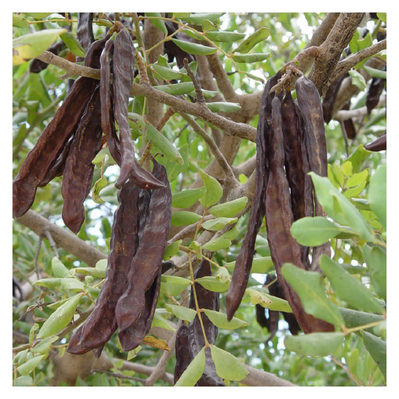

Ayuntamiento de Senés
JARDIN BOTANICO DE ESPECIES AUTOCTONAS DE SENES

Ceratonia siliqua

El algarrobo (Ceratonia siliqua) es un árbol perennifolio típico del clima mediterráneo, muy adaptado a condiciones de sequía y suelos pobres. Se caracteriza por su porte robusto y su longevidad.
Presenta un tronco grueso y una copa amplia y densa que proporciona sombra. Sus hojas son compuestas, coriáceas y de color verde oscuro. Produce como fruto la algarroba, una vaina alargada y oscura que contiene semillas y pulpa dulce.
El algarrobo es originario de la región mediterránea, donde crece en zonas cálidas y secas, adaptándose bien a suelos pedregosos y pobres.
En el entorno de Senés, aparece en zonas de cultivo tradicional y terrenos abiertos, formando parte del paisaje rural.
La algarroba es rica en azúcares naturales, fibra y minerales. Se ha utilizado tradicionalmente como alimento tanto para humanos como para animales.
También se emplea en la industria alimentaria como sustituto del cacao y como espesante natural.
El algarrobo simboliza la resistencia y la generosidad, al producir frutos abundantes incluso en condiciones adversas.
Representa la adaptación y el aprovechamiento de los recursos del entorno mediterráneo.
En Senés, el algarrobo ha sido utilizado principalmente como alimento para el ganado. Tambien para alimentación humana, especialmente en épocas de escasez.
La harina de la algarroba ha sido recomendada para la diarrea y tambien como depurativa..
Las algarrobas maduran a finales del verano y en otoño, siendo recolectadas en ese periodo.
Las semillas del algarrobo tienen un peso muy uniforme, lo que dio origen al quilate como unidad de medida.
Es uno de los árboles más resistentes a la sequía del entorno mediterráneo.